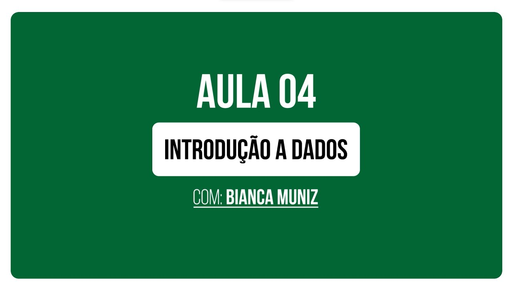
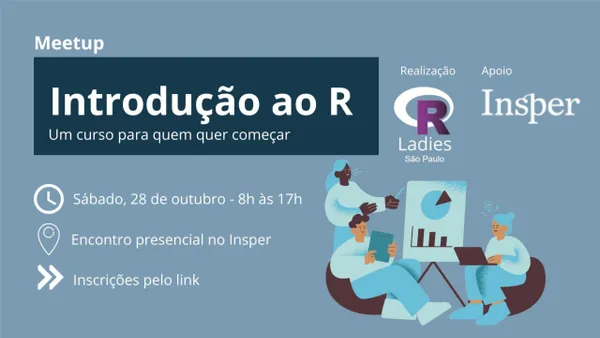
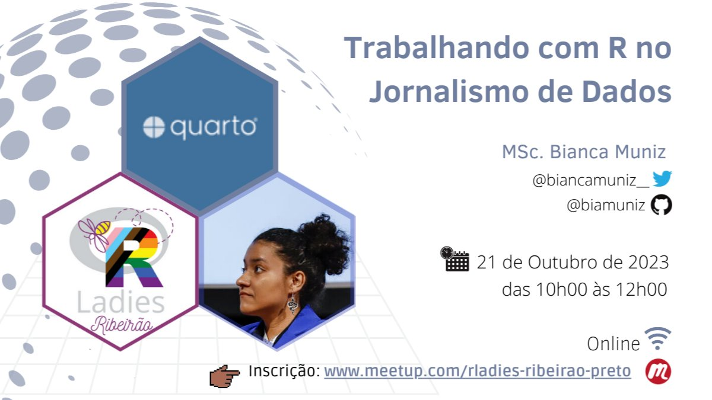
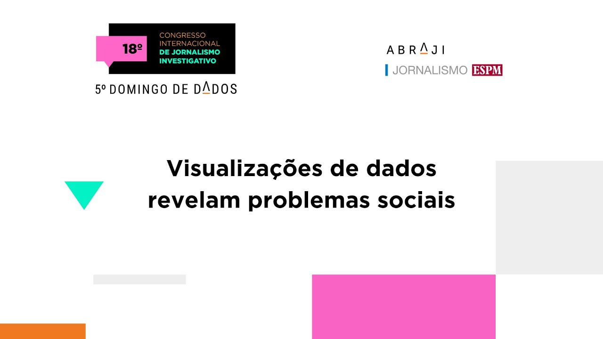
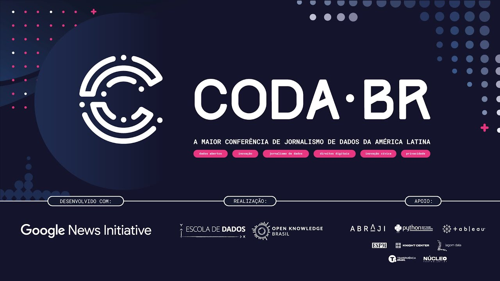
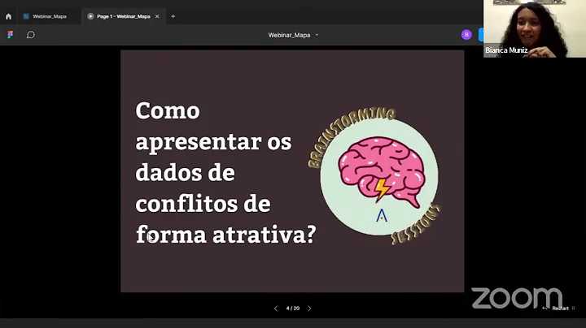

BM
Sobre
Portfólio
Programação
Jornalismo
Pesquisa
Apresentações
Blog
Talks
Palestras, workshops e outras apresentações que eu participei
Ordenar por
Padrão
Título
Data - Mais antigo
Data - O mais novo

Uma introdução ao jornalismo de dados | Curso Inclusão e Diversidade
Esta aula faz parte do curso de formação em jornalismo independente e empreendedorismo promovido pelo #Colabora no programa Inclusão e Diversidade. Nesta aula introdutória são discutidos conceitos, técnicas e ferramentas para analisar e apresentar informações através de dados. O módulo apresenta…
23 de fev. de 2024
Passo a passo de uma reportagem com dados
Aula do treinamento sobre jornalismo ambiental e cobertura de conflitos socioambientais do Portal Assobiar
23 de nov. de 2023

Introdução ao R
Meetup organizado pela R-Ladies São Paulo
28 de out. de 2023

Trabalhando com R no Jornalismo de Dados
Neste workshop, exploramos o uso do software R no jornalismo, acompanhando a produção de um relatório com Quarto que destrincha o fluxo de trabalho no jornalismo de dados.
21 de out. de 2023
Planilha: uma grande aliada da análise de dados
Workshop facilitado no Coda Amazônia 2023
2 de set. de 2023
Workshop: Python + R juntos com Quarto
Workshop facilitado no Coda Amazônia 2023
1 de set. de 2023

Visualizações de dados revelam problemas sociais
Crimes graves, crises e outros problemas sociais são temas de trabalhos brasileiros recentes e premiados. Essas matérias ganharam forma graças ao uso revolucionário do Dataviz. Conheça os trabalhos de Rodolfo Almeida para visualizar um mundo em crise na pandemia e o Mapa dos Conflitos, da Agência…
2 de jul. de 2023

Jornalismo de Dados com editores de planilhas
Com um editor de planilhas como o Google Sheets, Excel ou LibreOffice é possível fazer de uma contagem simples até busca por padrões em textos. Neste workshop, a partir de exercícios guiados, serão mostradas funções para “entrevistar uma planilha”, prós e contras do uso de editores e como…
3 de nov. de 2022
Jornalismo de Dados para mudar realidades
Apresentação no 4° Domingo de Dados da Abraji, em 2022.
7 de ago. de 2022

A Pública em dados e o ‘Mapa dos Conflitos’
Webinar da Escola de Dados
19 de jul. de 2022
Sem itens correspondentes